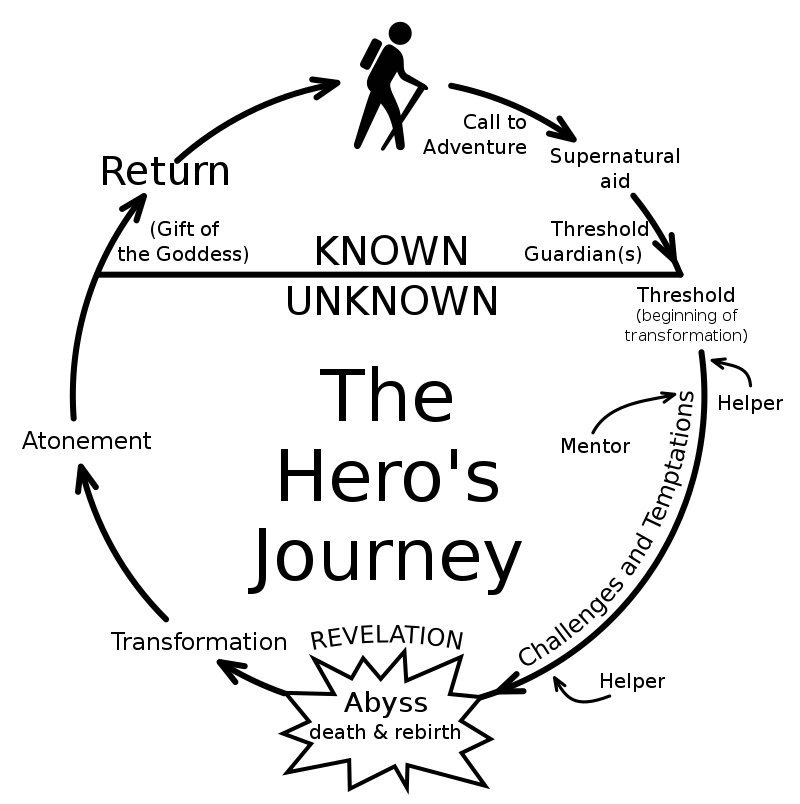

Library usage tutorial
Model
The library allows using text as an input to a Keras model in an easy way. All the building blocks are considered models, although not all models are the same kind the share some similarities.
All the models are in the package gianlp.models.
All models are callable
Let’s assume you have any model instantiated and built:
model = ... #model instantiation
model.build(corpus)
Now the model has some input and output shapes. Let’s assume the input shapes are two int arrays of shape (3,) and (2,2). We can call our model with two kinds of objects, keras layers and numpy arrays.
With keras layers we can do something like this as we would do with any tensorflow.keras.models.Model.
from tensorflow.keras.layers import Input
input1 = Input((3,), dtype='int32')
input2 = Input((2,2), dtype='int32')
model_output = model([input1, input2])
And then we may use the model output (with shape as specified in model.outputs_shape) in any keras model we like.
The other way of calling the model is with numpy arrays, this will forward the numpy array through the model.
input numpy as np
input1 = np.asarray([1,4,3])
input2 = np.asarray([[3,5], [0,1]])
model_output = model([input1, input2])
Here model output would be a numpy array or list of numpy arrays (again, as specified in model.outputs_shape).
All models know how to preprocess text
Any model from out library knows how to compute text into numbers that are interpretable for the inputs. With input shapes (3,) and (2,2) an example would be:
preprocessed = model.preprocess_texts(["hi this is an example",
"still an example"])
This will return a list with of arrays of shape (2,3) and (2,2,2) where the first dimension is the amount of texts. This can be used for calling the model and evaluate the model although for trainable models we will have a .predict method much more recommended.
All models are printable
Finally, any model can be printed or converted to string returning a summary similar to keras summary() method.
Text representation models
The models are going to be built using text representation models as input to trainable models, this is the first kind of building blocks we want to learn.
A text representation is a way to transform a text into numbers for the neural network to use.
Word representations
Pre trained word embedding
Name |
Value |
|---|---|
Trainable weights |
0 |
Input shape |
(# sequence maxlen,) |
Output shape |
(# sequence maxlen, #embedding dimensions) |
This is one of the simplest and most famous text representations. It basically chunks each text in words or tokens and then uses a vector as the representation of each word. Similar words are closer together in cosine distance.
If we have a pretrained embedding we can use the class PreTrainedWordEmbeddingSequence as a text input. The parameters for instantiating it are:
word2vec_src: this can be either a path to a txt file in word2vec format or a gensim KeyedVectors object.
tokenizer: this is a function used for tokenizing the texts, knows how to transform a string into a list of tokens. Must be possible to serialize it with pickle.
sequence_maxlen: the maximum length in words for the generated word sequences
So, let’s assume you have a word embedding of 150 dimensions for each word with a max length of 20. The model will internally chunk each text in words and transform them to it’s corresponding embeddings.
If the model does not know the word a special embedding for unknown words will be assigned. The resulting output shape would be (20,150) for each text.
If the text has less than 20 words the remaining embedding will be filled with a 0s vector of 150 dimension. This is referred as a mask, but beware, the mask is only the 0 vectors, the output has no keras masking (in the meaning of using
mask=Truein the embedding layer or using aMaskinglayer). This is not a bug, it’s a feature, keras masking don’t behave friendly with convolutions so no text representation implements keras masking, just vectors of zeros at the end. If you want an RNN to stop forwarding when the text finished you will have to add an explicitMasking(0.0)layer in front of it, or use ourRNNDigesttrainable model, but we’ll be covering that later.
No embedding in this layer is trainable since this are pretrained, for trainable word embedding or transfer learning word embeddings we have another object.
Trainable word embedding
Name |
Value |
|---|---|
Trainable weights |
0 to (#vocabulary + 1) x #embedding dimensions |
Input shape |
(# sequence maxlen,) |
Output shape |
(# sequence maxlen, #embedding dimensions) |
The class of this one is TrainableWordEmbeddingSequence. It’s another word embedding allowing trainablity, before explaining it parameters I will explain it’s behaviour. This object, as in the PreTrainedWordEmbeddingSequence, can receive a pre trained embedding but it’s optional.
The behaviour of this embedding is the following:
It learns the vocabulary by learning the most common words in build time.
For each word in the vocabulary:
If a pretrained word embedding is provided and the word is there the vector for that word is taken from the pretrained embeddings.
If no pretrained embedding is provided or the word is not known in the pretrained embedding a random vector is assigned for that word.
The result is an embedding matrix with two groups, the previously known embeddings and the new word embeddings with the following properties:
The new word embeddings are ALWAYS trainable.
The previously known embeddings can or cannot be trainable by user choice.
The embedding assigned to unknown words that may appear in training or inference time is ALWAYS trainable.
Summarizing all this we have three modes for using this object:
Transfer learning: with pretrained embeddings
Pretrained embeddings frozen
Pretrained embeddings trainable
All vectors trainable
We do NOT recommend using this object without pretrained embeddings, this will result in a lot of trainable weights and a very probable overfitting. Also this vectors will contain the information regarding the task trained but will not be real embeddings by definition.
Knowing the behaviour, the parameters for initializing the object are:
tokenizer: this is a function used for tokenizing the texts, knows how to transform a string into a list of tokens. Must be possible to serialize it with pickle.
word2vec_src: optional path to word2vec format .txt file or gensim KeyedVectors.
min_freq_percentile: a common practice when building word embeddings is fixing a vocabulary size, but, how will you know which number to use? Our library uses a minimum percentile for this, any word that has a frequency of less than this percentile will not be in the vocabulary (i.e. if min_freq_percentile is 5 the 95% most frequent words will be kept)
max_vocabulary: this is an optional int for the maximum size of the vocabulary. Can be mixed with the limit imposed by min_freq_percentile. If min_freq_percentile is 0 this will be the only limit (i.e. the vocabulary will be the
max_vocabularymost common words).embedding_dimension: the dimension of the target embedding
sequence_maxlen: the maximum allowed sequence length
pretrained_trainable: if the vectors pretrained will also be trained. ignored if word2vec_src is None
random_state: the random seed used for random processes
The behaviour for 0 padding, masking and unknown words is the same as in the PreTrainedWordEmbeddingSequence class.
Fasttext embedding sequence
Name |
Value |
|---|---|
Trainable weights |
#embedding dimensions |
Input shape |
(# sequence maxlen,) |
Output shape |
(# sequence maxlen, #embedding dimensions) |
Fasttext is a way of building word embeddings using ngrams. For example let’s assume you have the word automagical, we can split it in au-to-ma-gi-cal, then learn representations for each ngram such as when every ngram vector get’s summed up the vector for automagical makes sense.
If we train this with a big corpus then we have a good embedding generator for words that may not have appeared in the training set, because we can always split a word in it’s ngrams and then sum them.
Sadly there’s no performant way to compute new vectors for each word, unknown or not, using keras. We need to have a discrete and defined vocabulary, so, given a pretrained fasttext our object does the following:
In build time creates the vocabulary using the most common words with the same parameters as
TrainableWordEmbeddingSequence.Computes the word embedding for each word of the vocabulary.
Creates a random vector to initialize the embedding for future unknown words.
The resulting embedding matrix will be padded at 0, all vectors generated from fasttext will be fixed. The unknown word vector is always trainable.
The initialization parameters of FasttextEmbeddingSequence are:
tokenizer: this is a function used for tokenizing the texts, knows how to transform a string into a list of tokens. Must be possible to serialize it with pickle.
fasttext_src: path to .bin facebook format fasttext or gensim FastText object.
sequence_maxlen: the maximum allowed sequence length
min_freq_percentile: minimum percentile for vocabulary building, any word that has a frequency of less than this percentile will not be in the vopcabulary (i.e. if min_freq_percentile is 0.05 the 95% most frequent words will be kept)
max_vocabulary: optional, maximum vocabulary size
random_state: the random seed used for random processes
Char representations
Char embedding sequence
Name |
Value |
|---|---|
Trainable weights |
(#char vocabulary + 1) x #embedding dimensions |
Input shape |
(# sequence maxlen,) |
Output shape |
(# sequence maxlen, #embedding dimensions) |
The CharEmbeddingSequence object chunks each text into chars and transform each char to a vector. In build time learns the most common chars. All vectors are trainable.
The initialization parameters are:
embedding_dimension: the target char embedding dimension
sequence_maxlen: the maximum allowed sequence length
min_freq_percentile: minimum percentile of the frequency for keeping a char when building the vocabulary
random_state: random seed for embedding initialization
Other representations
Chars per word sequence
Name |
Value |
|---|---|
Trainable weights |
#char vocabulary x #embedding dimensions |
Input shape |
(# words maxlen, #chars maxlen) |
Output shape |
(# words maxlen, #chars maxlen, #embedding dimensions) |
One very common way of using char embeddings is learning representations for OOV (out of vocabulary) words. To do this we can consider each word a sequence of char embeddings and the transform that sequence into one vector for each word. CharPerWordEmbeddingSequence gives us that first chars-per-word representation so we can transform it to word vector the way we want.
The initialization parameters are:
tokenizer: the word tokenizer needed for spliting the text into words before spliting each word in chars
embedding_dimension: the target char embedding dimension
word_maxlen: the maximum length of word sequence
char_maxlen: the maximum length in chars for each word
min_freq_percentile: minimum percentile of the frequency for keeping a char when building the vocabulary
random_state: random seed for initialization
In all our objects masking are vectors of zeros, if you need keras masking you can use the keras Masking layer before feeding your layers. Beware, if you compute the final vector for each word be sure that the resulting word vector is all zeros if all the sequence char vectors were 0, we want to keep the mapping of a word that didn’t exist as a zero vector so we can use masking over the word sequence too. How can i make sure of this? Use CNNs and RNNs with NO biases, you actually don’t really need biases, since the vectors are trainable.
Per chunk sequencer
Name |
Value |
|---|---|
Trainable weights |
the same as the text representation used |
Input shape |
(# chunk maxlen, ) + text representation input shape |
Output shape |
(# chunk maxlen, ) + text representation output shape |
Let’s imagine you want to split a text into paragraphs, then sentences, then words, then chars per word. Our library supports the full extent of your schizophrenic wishes, that’s why we have a PerChunkSequencer.
The per chunk sequencer accept’s any other text representation and a chunker and applies the text representation along the chunks of the text. The parameters for initializing it are:
sequencer: the text representation model to use
chunker: the picklelizable function that chunks a text into a list of texts
chunking_maxlen: the maximum length in amount of chunks allowed
For easier understanding here is an example. The hero’s journey or monomyth is a template followed by a lot of stories for the progression of a hero. It was and is widely used in some of the most influential fictions of the western culture, like “Shrek” the movie. Along different stories some steps of the monomyth are present and other aren’t and some heroes may go back a couple of steps sometimes.
{kind=link}
We have teamed up with a literature expert and we classified paragraphs of multiple fictions. We want to classify new fictional pieces to find all this steps.
We could work this as a word sequence, but that won’t work as good as with paragraphs because that’s the minimal unit we want to classify. We are trying to detect higher level sequences, it is too much to ask for a model to learn the transition between steps as a transition of words. Treating this as a word sequence problem would be like making a topic classifier by classifying the words individually.
We are going to build a structured classifier, where the sequences would be for each paragraph, for each sentence, for each word two representations: a fasttext and a char per word one. Then we could use a BiLSTM-CRF to detect the label of each paragraph and capture the transition probability between steps. Let’s work with the text representations:
from my_utils import paragraph_chunker, sentence_chunker, word_tokenizer
We have somewhere a paragraph chunker (a function that splits text by paragraphs), a sentence chunker (we could use the one in nltk) and a word tokenizer. We said we were going to use chars per word and fasttext word embedding, let’s first build the char per word representation:
char_per_word_repr = CharPerWordEmbeddingSequence(word_tokenizer, embedding_dimension=32, word_maxlen=40, char_maxlen=12)
charword_per_sentence = PerChunkSequencer(char_per_word_repr, sentence_chunker, chunking_maxlen=50)
charword_per_paragraph = PerChunkSequencer(charword_per_sentence, paragraph_chunker, chunking_maxlen=1000)
To understand a little bit more:
char_per_word_repr has output shape of
(40,12,32)charword_per_sentence has output shape of
(50,40,12,32)charword_per_paragraph has output shape of
(1000,50,40,12,32)
Now we can learn with convolutions a representation for each word given the char sequence, using the trainable models this will be easy and we will se examples of this.
chars_word_digest = CNN(charword_per_paragraph)
With this pseudocode we have digested the last two dimensions of (12,32) in a vector of dimension 50. The resulting dimension of chars_word_digest is (1000,50,40,50).
Doing something similar for the fasttext sequence we can obtain a sequence of let’s say (1000,50,40,100)
Now we can concatenate the two and obtain a vector of 150 dimensions per word (1000,50,40,150).
After that we may obtain with a RNN a vector per sentence of 300 dimensions resulting in a shape of (1000,50,300).
Finally with another RNN we obtain a vector of 500 dimensions per paragraph (1000,500). Now we just need a BiLSTM-CRF at the end.
And there it is, the architecture for a hero’s journey structured classifier. This kind of classifier for high level structures are not common in the industry but are not impossible to find either. The key for this cases is how easy we built up the high level structure without having to think about preprocessing (i dare you to write this text preprocessor without bugs at the first try, i can’t, specially considering the stories need to be fed the neural network using a generator for ram issues). Digesting those shapes with high ndims will be equally easier when we reach the trainable models section of the tutorial.
Mapping embedding
Name |
Value |
|---|---|
Trainable weights |
0 |
Input shape |
(1,) |
Output shape |
(#embedding dimensions,) |
Sometimes we may have a single embedding for each unique item, for categories, items, ids, users, whatever. With the MappingEmbedding we can treat the text as a key to a single vector (not a sequence).
The parameter for initializing it is just:
word2vec_src: a word2vec format .txt file indicating which text has which embedding or a KeyedVectors gensim object
Trainable models
Common methods
The common methods in all trainable models are:
compile
compile() is a method for compiling the model following the same parameters as keras models. Previous building is required.
fit
For training the model, building and compiling is required.
fit() is the method for training the model, very similar to keras.
No matter which format is used for x or validation data, the model is always internally trained with a generator so if batch size elements can fit in ram when preprocessed you will have no ram issues. Multi-text models only accept dicts and dataframes in x and simple-text models only series or lists.
TrainableModel supports the use of multiprocessing along with generators or inheriting our own gianlp.utils.Sequence.
predict
predict() supports the same formats as fit() along with multiprocessing too!
If the data is in the form of plain texts, an inference batch must be set.
freeze
freeze() is inplace, freezes the model’s weights (can’t be undone).
Keras Wrapper
The KerasWrapper as the name says is a wrapper for any keras model.
This wrapper can accept inputs in multiple ways.
The initialization parameters are:
inputs: the models that are the input of this one. Either a list containing model inputs one by one or a dict indicating which text name is assigned to which inputs. If a list, all should have multi-text input or don’t have it. If it’s a dict all shouldn’t have multi-text input.
wrapped_model: the keras model to wrap. if it has multiple inputs, inputs parameter should have the same len
Examples
Given the following text representations:
from nltk import word_tokenize
char_emb = CharEmbeddingSequence(embedding_dimension=32, sequence_maxlen=20, min_freq_percentile=5)
char_emb_per_word = CharPerWordEmbeddingSequence(word_tokenize, embedding_dimension=32, word_maxlen=10, char_maxlen=8, min_freq_percentile=5)
We know that char_emb has an output shape of (20,32) and char_emb_per_word of (10,8,32).
Let’s see a few examples:
Example 1: one input
from tensorflow.keras.models import Sequential, Model
from tensorflow.keras.layers import Dense, Input, LSTM, Conv1D, GlobalMaxPooling1D, Concatenate
from gianlp.models import KerasWrapper
model = Sequential()
model.add(Input((20,32)))
model.add(GlobalMaxPooling1D())
model.add(Dense(1, activation='sigmoid'))
model = KerasWrapper(char_emb, model)
The output shape would be (1,) and the input shape (20,) (same as char_emb input shape).
After that if we want to train this model we need to build it, which will build always all the graph, including all models chained. We then compile it and use the fit method.
Example 2: classifier per word
model = Sequential()
model.add(Input((8,32)))
model.add(GlobalMaxPooling1D())
model.add(Dense(1, activation='sigmoid'))
model = KerasWrapper(char_emb_per_word, model)
The output shape would be (10,1) and the input shape (10,8). Here we can see that the wrapper knows how to automatically adapt the input of the model as time distributed over the representation output without telling it explicitly.
KerasWrapper will assume that any extra ndim (when possible and shapes compatible) needs a time distribution over each extra dimension.
Example 3: Multiple inputs, chaining and automatic concatenation
encoder1 = Sequential()
encoder1.add(Input((20,32)))
encoder1.add(GlobalMaxPooling1D())
encoder1.add(Dense(20, activation='tanh'))
encoder1 = KerasWrapper(char_emb, encoder1)
encoder2 = Sequential()
encoder2.add(Input((10,8,32)))
encoder2.add(Conv1D(10))
encoder2.add(GlobalMaxPooling1D())
encoder2.add(Conv1D(10))
encoder2.add(GlobalMaxPooling1D())
encoder2.add(Dense(20, activation='tanh'))
encoder2 = KerasWrapper(char_emb_per_word, encoder2)
encoder1has input shape(20,)and output shape(20,).encoder2has input shape(10,8)and output shape(20,).
We want to build a classifier using this two encoding of the texts.
classifier = Sequential()
classifier.add(Input((40,)))
classifier.add(Dense(1, activation='tanh'))
classifier = KerasWrapper([encoder1, encoder2], classifier)
classifier has two inputs, since the keras model input has dimension (40,) the wrapper realizes it needs to concatenate the outputs of both encoder. We can also build the keras model this way with the same result:
inp1 = Input(20,)
inp2 = Input(20,)
concat = Concatenate()([inp1, inp2])
out = Dense(1, activation='sigmoid')(concat)
classifier = Model(inputs=[inp1, inp2], outputs=out)
classifier = KerasWrapper([encoder1, encoder2], classifier)
Either way the result is the same. classifier will have inputs shapes [(20,), (10,8)] and output shape (1,).
We can always chain as many models as we want.
Example 4: Multi-text input
encoder = Sequential()
encoder.add(Input((20,32)))
encoder.add(GlobalMaxPooling1D())
encoder.add(Dense(20, activation='tanh'))
encoder = KerasWrapper(char_emb, encoder)
encoder has input shape (20,) and outputs shape (20,).
We want to train a siamese network but using two different texts.
classifier = Sequential()
classifier.add(Input((40,)))
classifier.add(Dense(1, activation='sigmoid'))
classifier = KerasWrapper([('text1', [encoder]), ('text2', [encoder])], classifier)
classifier has inputs shapes [(20,), (20,)].
Since this classifier is multi-text it need to be fed to the two different texts, so fit and predict no longer accept lists or pandas Series, it needs dict of lists or Dataframes.
More examples
Real examples involving fiting and predicting are in next pages of this tutorial.
RNNDigest
RNNDigest is an easier way of digesting sequences in deep-RNNs but in reality is another implementation of KerasWrapper.
Its initialization parameters are:
inputs: the inputs of the model
units_per_layer: the amount of units per layer
rnn_type: the type of rnn, could be “gru” or “lstm”
stacked_layers: the amount of layers to stack, 1 by default
masking: if apply masking with 0 to the sequence
bidirectional: if it’s bidirectional
random_seed: the seed for random processes
return_sequences: if True, the last RNN layer returns the sequence of states